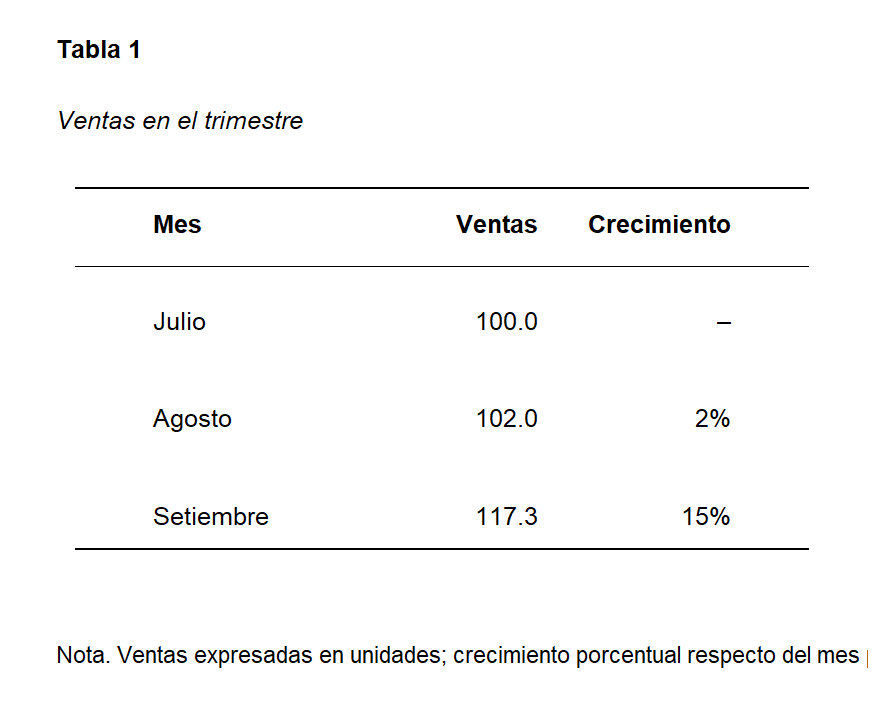

Creación de Recursos Educativos y Presentaciones de Alto Impacto
Estrategias pedagógicas, herramientas digitales e IA
Mgtr. Edir Gonzano
Universidad Nacional de Educación Enrique Guzmán y Valle
La Teoría Cognitiva del Aprendizaje Multimedia
Por Richard Mayer

Modelo del proceso de aprendizaje multimedia (Adaptado de Mayer, 2010 y Sorden, 2012).
Ejemplo: Reduciendo la Carga Extrínseca
❌ Con Distracciones (Carga Alta)
Música de fondo, animaciones irrelevantes y exceso de texto aumentan la carga extrínseca.
✅ Sin Distracciones (Carga Óptima)

Un diseño limpio y enfocado permite que el estudiante se concentre en lo esencial (Principio de Coherencia).
Demostración: Aserción-Evidencia
❌ Formato Tradicional
Se reporta incremento en ventas, campaña exitosa y nuevos clientes durante el tercer trimestre.
✅ Enfoque A-E
Las ventas aumentaron un 15% gracias a la nueva campaña de marketing.

El Poder de la Narrativa üìà

Inicio
Presenta un problema o una pregunta intrigante para captar la atención.

Nudo
Desarrolla tu idea con datos y ejemplos que construyan el interés.

Desenlace
Concluye con una solución o una llamada a la acción memorable.
üöÄ ¡Actividad! Aplica lo Aprendido
Elige UNA de las siguientes actividades y comparte tu creación.
Actividad 1: Redise√±o Radical üé®
Toma una diapositiva tradicional y sobrecargada (tuya o de ejemplo) y rediséñala aplicando al menos TRES principios vistos hoy.
- Aserción-Evidencia
- Principio de Coherencia
- Principio de Señalización
- Mejora de Contraste y Tipografía
¡Muestra el antes y el después!
Actividad 2: Creaci√≥n con IA ü§ñ
Usa un asistente de IA (Gemini, ChatGPT) con un prompt bien diseñado para generar el contenido de una nueva diapositiva sobre un tema educativo de tu elección.
- Especifica el rol ("Actúa como...").
- Define el público y el formato (Aserción-Evidencia).
- Pide una metáfora visual para la evidencia.
- No olvides detallar el tono deseado.
¡Comparte tu prompt y el resultado!
¡Envía tu trabajo y sigamos en contacto!
 talentboost.edu@gmail.com
talentboost.edu@gmail.com